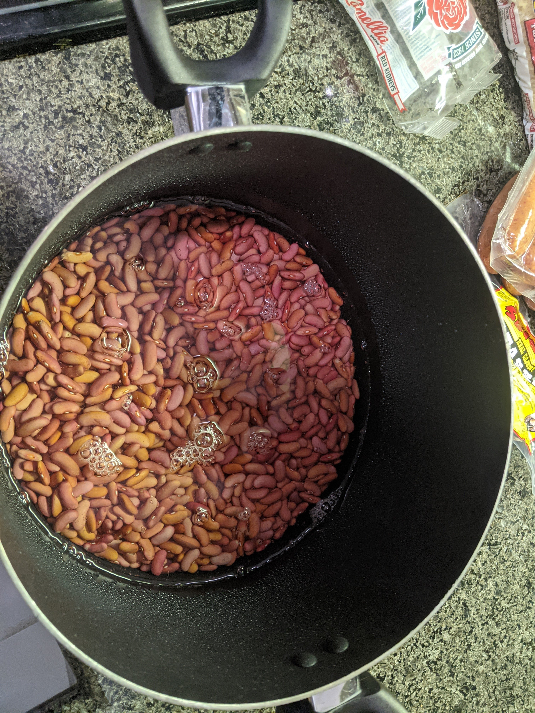

New Orleans Red Beans and Rice
by Kevin Broadbridge
Ingredients
- 1.5 cups celery
- 1.5 cups bell pepper (any kind, but mixed is best)
- 3 cups green onions
- 3 tbsp parsley
- 2 cups onions
- 6 tbsp garlic
- 1.5 lb red kidney beans
- 2 cups parboiled rice
- 1/2 lb tasso pork
- 1.5 lb pork smoked sausage
- 1.5 tbsp Tony Chachare's
- 1.5 tbsp Slap Ya Mama
- 1 tsp Tabasco
- 6 cups chicken broth
- half a bottle of liquid smoke
- 4-6 bay leaves (DO NOT EAT)
- 1 7qt. crock pot
- wooden spoon
- potato masher
Soaking the BEANS
First, take the beans and empty them into a pot. Fill the pot with water and let them soak overnight. Fill the
pot about 3x deeper than the height of the beans, so they
soak up the water.

Preparing the Crock Pot
If you have not bought veggies pre-chopped, chop all veggies into about 1/4 inch squares.
Next, chop the tasso into about 1/2 inch squares and place into crock pot
Next, chop the sausage crosswise, about 1/4 inch thick, and place into crock pot
Place all the vegetables into the pot. Then, fill the rest of the pot with the soaked beans. You might not end up
using all
of the beans you soaked. Put the liquid smoke, Tony Chachare's and Slap Ya Mama's seasoning, bay
leaves, and tabasco into the crock pot. Finally, fill the remaining space of the crock pot with chicken stock.
Again, you will probably not end up using all of the chicken stock. Mix all items in the crock pot with either
your hands or a wooden spoon.
Cooking
Turn the heating option on the crock pot to "low" and let cook for 8 hours. Once it is cooked it will look like
this:
Smushing the Beans
Finally, in order to make the red beans creamy, they must be smushed. I find a potato masher (one with square
grates at bottom) to be the best tool for this, but you can also use a spoon. If using a potato masher, push
down vertically on the beans and keep doing this until they all become smushed and creamy. If using a wooden
spoon, press the beans against the walls of the crock pot to smush them. It may feel like you aren't making
progress with this but you definitely are, keep smushing until it looks good to you. Heres what the end product
should look like: